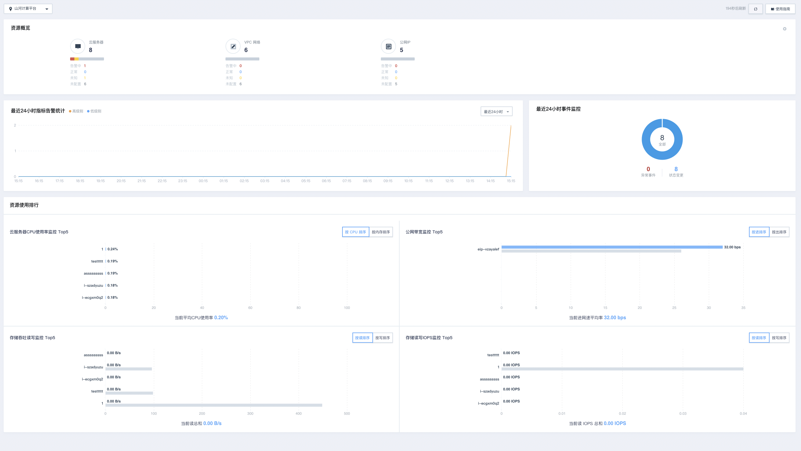
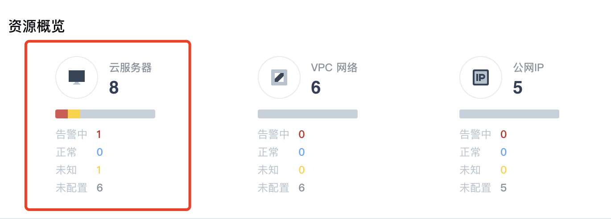
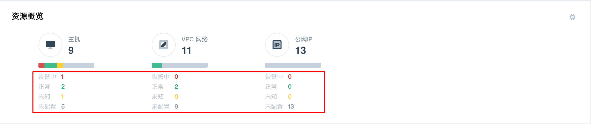
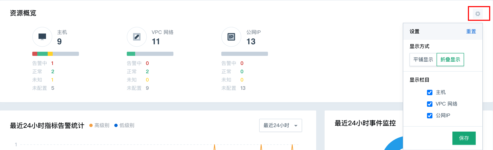
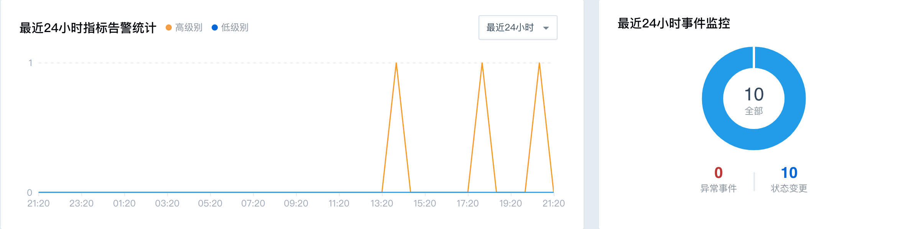
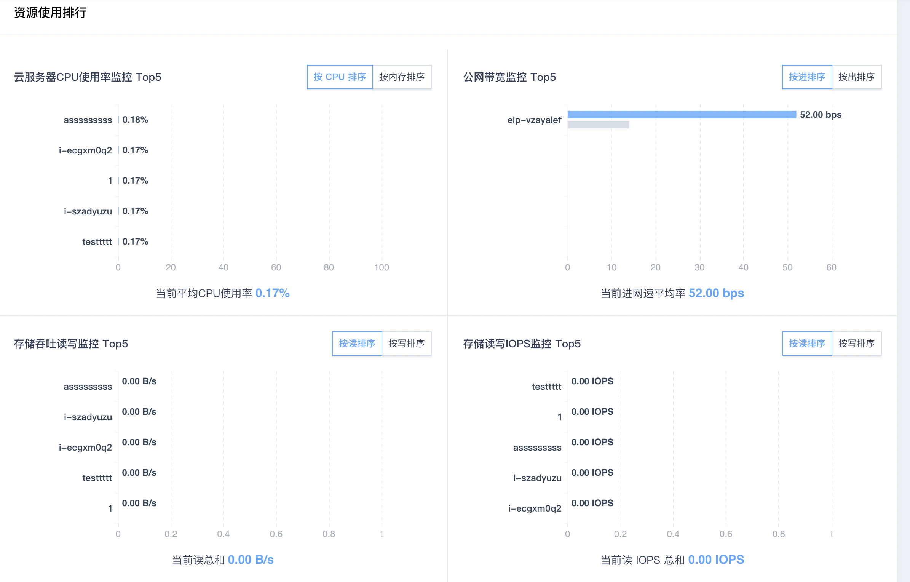

监控概览
监控概览操作步骤
用户登陆控制台后，点击 「云监控」服务，进入「监控概览」，即可看到所有已经统计好的监控数据情况。
如下1图所示：

- 实时展示资源类型与总数统计
监控概览页面以实时刷新为标准，为用户提供参考价值最大的资源监控数据。除此之外，无需用户做额外的操作，云监控可自动获取到平台上的所有资源情况，并全部展示在概览界面上，如下图：

- 各资源告警、正常、未配置告警策略数据统计展示
在按资源类型统计整体资源数量之后，则是对某一类资源告警情况的图形化与数据化展示了。
资源概览中分别支持资源监控的「告警中」、「正常」、「未知」、「未配置」四大类统计结果。用户可直观地看到所有的资源，各类监控状态下的数据占比。如下图所示：

除此之外，若用户账户内涵盖的资源类型很多，则可对「资源概览」切换展示形式，以供用户更加直观的了解到所有资源的情况，如下图：

- 近24小时指标/事件/告警统计数据展示，如下图所示：

「监控概览」功能中的「近24小时指标告警统计」部分，对指标告警的“高级别”、“低级别”的所有告警次数进行了统计整合，用户可直观地看到账户内不同时间点上的「不同等级的指标告警」数据统计结论，有助于用户评估平台所有资源的整体健康状态。
「监控概览」的「近24小时事件监控统计」部分，对24小时内的资源触发的“异常事件”、“状态变更”两大类事件进行了统计展示。
-
资源核心指标数据总和以及Top5统计展示
在「资源使用排行」模块内，为用户统计出了云服务器、硬盘、EIP等核心基础资源的用量排序。如下图：

目前支持的具体指标包括：
1）云服务器：CPU使用率排序、内存使用率排序
2）硬盘：读吞吐率排序、写吞吐率排序、IOPS读排序、IOPS写排序
3）网络：进速率排序、出速率排序